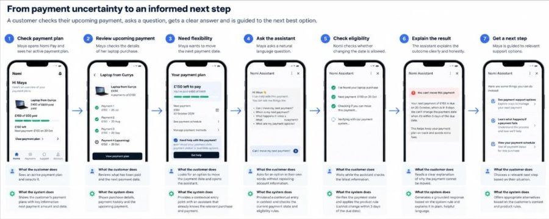

Nomi Pay is a fictional product. It is an independent concept project, not client work.
Overview
The project focuses on a customer with one £150 instalment remaining who wants to know whether she can move the payment date. I designed the payment journey, the conversational experience and the agent behaviour, then built a working prototype in Lovable to test how the experience handled context, different ways of asking the same question, restrictions, and recovery when the customer's preferred action was unavailable.
Problem
Payment information can be technically correct without answering the question a customer actually has. A customer may be able to see what they owe and when it is due, but still need to understand whether they can change the payment, why an option is unavailable, what will happen next, and what they can do instead. The challenge was to reduce that uncertainty without making customers search through policy content, repeat information the product already knew, or rely on an AI assistant that could guess beyond the available evidence.
Solution
A contextual payment journey where the important financial state is visible first and the payment itself is available from within the conversation. Nomi carries the payment context into the conversation, so customers can ask in their own words without repeating known information. When Maya asks whether she can move her payment, the assistant checks the relevant payment state before responding, explains the restriction in plain language and provides useful next steps. The design combines information hierarchy, progressive disclosure, natural-language interaction, context preservation, disambiguation, customer control and recovery from unsuccessful actions.
Customer scenario
Maya, 31, bought a £600 laptop using Nomi Pay's four-instalment plan. She has paid three instalments. Her final £150 is due in 3 days. She opens the app to ask whether she can move the date. She is not in financial distress, but wants flexibility because another bill is due first. Nomi already knows the purchase, remaining balance, next payment amount, due date and current plan status, so the customer should not have to repeat information the product already holds.
Product constraint
- Payment dates cannot be changed when the payment is due within 3 days.
- That gives a real rule for the assistant to work with.
- The assistant must not invent an exception.

Pain points became design constraints
I identified five mental barriers: an unclear payment position; uncertainty about what they can change; "can I trust the AI assistant's answer?"; dead-end answers; and repeating information the product already knows. Rather than treating content as a layer added after the interface, I used these barriers to decide what customers needed to know, when they needed to know it and what the product should do next.
Reducing cognitive effort
Remaining balance, progress, payment amount and date, with contextual help, are primary information on the plan screen.
Preserving context and agency
The assistant entry carries payment context into the conversation, accepts natural language and separates asking from acting.
Explaining outcomes and supporting recovery
The "You can't move this payment" screen leads with the outcome, translates system rules into customer language and gives another useful route forward.
Making system activity visible
The eligibility check screen shows Nomi is checking, using verified payment state and grounding the answer in product rules.
Building the prototype
I built the working prototype in Lovable so I could move beyond static screens and test the experience as a conversation: could customers understand their payment situation, ask for help in their own words and get a clear, relevant answer grounded in information the product already holds? I also tested whether Nomi preserved context, recognised different ways of expressing the same need, clarified ambiguity when necessary, explained a restriction in plain language and helped the customer recover.
Context and conversation state
The customer is viewing a known payment plan. That context carries into the assistant, so the design can resolve which payment a question refers to and check the relevant rule before answering.
The model below is reconstructed for this portfolio from the documented prototype behaviour. It makes the design reasoning inspectable.
- Plan visibleOne £150 payment remains, due in three days.
- Request understoodResolve the date-change intent. Clarify a consequential ambiguity.
- Eligibility checkedThe simulated rule returns
eligible: false. - Restriction explainedExplain the outcome and show an available next step.
Action and authority boundaries
The conversation separates a question about a payment from permission to alter it. In this scenario, the date-change request reaches an ineligible result. The prototype then supports understanding and recovery.
| Boundary | What the design permits | What needs to be true |
|---|---|---|
| Use payment context | Answer using the plan the customer is viewing. | The relevant amount, due date and plan state are available. |
| Check eligibility | Show a checking state, then explain the simulated rule’s result. | The response is grounded in the known payment state. |
| Handle ambiguity | Ask a focused clarification when the requested action or payment is unclear. | The ambiguity would change what the system does or says. |
| Change a payment | The current prototype illustrates the conversation and makes no payment changes. | A production action would need agreed service rules, explicit authorisation and an implementation contract. |
| Recover | Explain the restriction and show an available support route. | The route is supported by the product’s defined options. |
Behaviour checks described in the project record
Before the four-participant exercise, I manually checked how the prototype handled intent, context, the ineligible result and unavailable information. The following cases make those expectations explicit.
| Input or state | Expected behaviour |
|---|---|
| “Can I pay it later?” / “Can I push back my payment?” | Resolve the date-change intent and check the relevant payment state. |
| “Can I change it?” | Use the current context where the meaning is clear, or clarify when several interpretations are possible. |
eligible: false | Explain the restriction and the available next step. Keep the payment unchanged. |
| Payment information unavailable | Acknowledge the missing information and support recovery. |
| An eligibility check is underway | Make the checking state visible before presenting a consequential answer. |
The case study records the manual checks and their intended behaviour. Input/output traces and a repeatable automated suite remain gaps in the public evidence.

Usability testing
I tested the working prototype with 4 participants against three research goals:
- Test intent mapping. Can customers quickly identify how much is left to pay and when the next payment is due without searching or calculating?
- Test how the agent handles ambiguity. If someone says "Can I change it?", can Nomi use the existing payment context when the meaning is clear, but ask a focused clarification when it is not?
- Test recovery conversational turns. When the preferred action is unavailable, does the conversation help customers understand what they can do next rather than leaving them at a dead end?
The four-participant exercise documents the research scope. Participant findings, revision traces and production service measures remain to be published.
Learnings
- Context reduces unnecessary conversation. When the assistant already knows which payment the customer is viewing, asking them to repeat that information adds friction rather than clarity.
- Natural language needs more than one "correct" phrase. Customers may say "move my payment", "pay later", "push it back" or "change the date". The experience needs to respond to the underlying need rather than force customers to learn product terminology.
- Clarification is useful only when ambiguity matters. A conversational agent should use available context when the meaning is clear, but ask a focused question when there are genuinely several possible interpretations.
- A negative answer still needs to help. "You can't move this payment" is not enough on its own. Explaining why and giving a useful next step turns a refusal into a recoverable experience.
- Confidence should match what the product knows. The assistant should make a definite statement only when the relevant payment information has been checked. When information is unavailable, acknowledging uncertainty is better than guessing.
Next steps
- Test with customers to see whether people understand their payment position and make sense of Nomi's responses without additional explanation.
- Test more ambiguous language such as "Can I change it?", "I need more time" or "What can I do?".
- Define a fuller support journey. The prototype deliberately limits support options rather than inventing policies. A production version needs agreed rules and content for missed payments, failed payments and financial difficulty.
- Test edge cases and failure states: payment data unavailable, conflicting or outdated, or an action that cannot be completed.
- Measure whether the experience actually helps: do customers understand their payment status, self-serve successfully, recover from unsuccessful requests and avoid unnecessary contact with support?